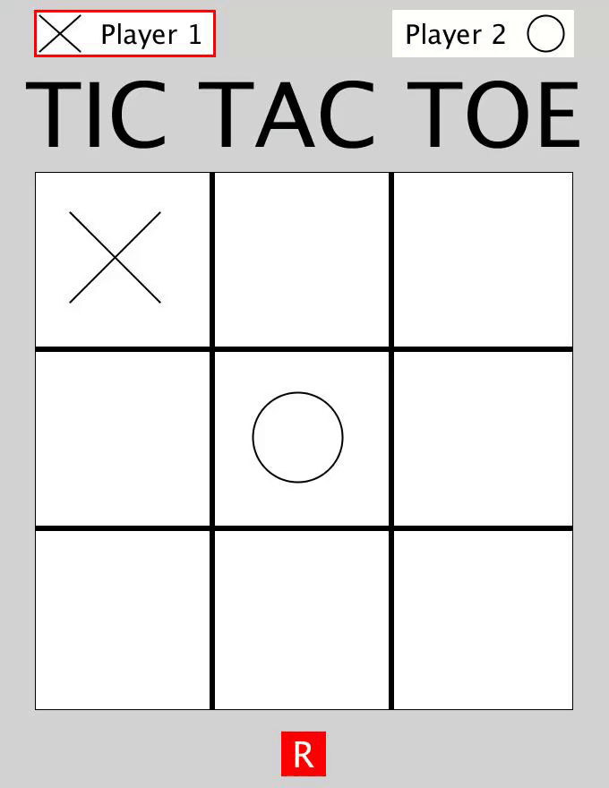
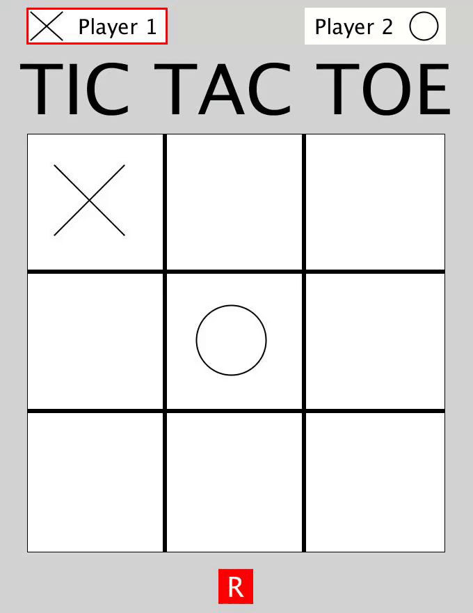

Christoper Hau
Hi! My name's Chris. I'm from Hong Kong. Before I came to City, I studied at the University of Reading doing accounting but found that I hated the course so I decided to swap to computer science. I'm studying online from Hong Kong still, but I'm looking forward to meet you all in hopefully December of this year!
Bootcamp 2020: Tic Tac Toe
My first programming project, concluding the two week Programming Bootcamp at City (2020). I created a two player tic tac toe game. The goal of the game is to try and get either three crosses or circles in a row. The top of the window will also show whether it is player 1 or player 2's turn to draw. To draw a cross, you will need to hover over the desired location and press x on your keyboard. For a circle, press c. If you would like to restart the game, hover over the red restart button at the bottom of the window and press r on your keyboard. The code mostly consists of if statements and could be compressed more so I hope to improve on that in future.
Check out the code on Github: https://github.com/chrishau13/bootcamp2020/

 
